Sau khi đăng nhập với quyền Quản trị viên, hệ thống sẽ chuyển tới trang Quản lý chất hóa học.
Sau khi chuyển tới trang thành công, thông tin danh sách Chất hóa học sẽ được hiện
ra:
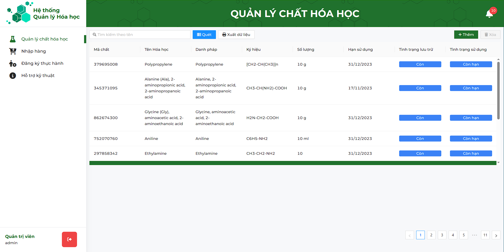
Mỗi bản ghi sẽ thể hiện thông tin cơ bản của chất hóa học đó bao gồm Mã chất, Tên Hóa học,
Danh pháp, Ký hiệu, Số lượng, Hạn sử dụng, Tình trạng lưu trữ, Tình trạng sử dụng
Để tìm kiếm chất hóa học, nhập tên Chất hóa học cần tìm vào ô tìm kiếm, sau đó ấn
Enter để tìm kiếm. Ấn nút để xóa tìm kiếm.

Di chuột vào nút Thêm mới
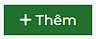 ở góc phải phía trên màn hình danh sách, sau đó chọn mục
Thêm mới, cửa số Thêm mới sẽ hiện ra
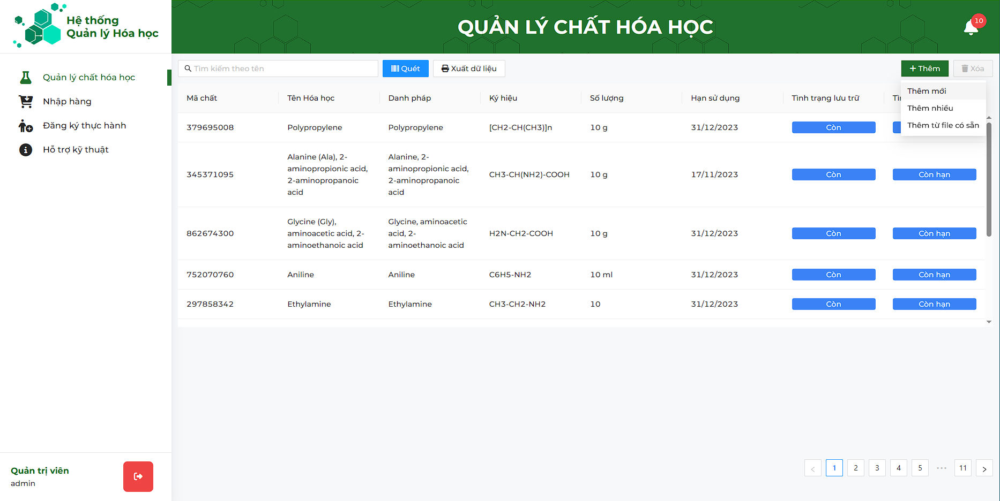
Thêm mới hiện ra, nhập những thông tin cần thiết liên quan đến chất hóa học ở trong cửa sổ đó. Các trường Tên chất hóa học, Ký hiệu hóa học, Loại chất, Danh pháp, Số lượng, Đơn vị, Hạn sử dụng là những trường bắt buộc nhập.
Sau đó ấn nút 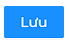 để lưu thông tin đã nhập

Nếu bỏ qua một trong số những trường đó, hệ thống sẽ hiện ra cảnh báo:
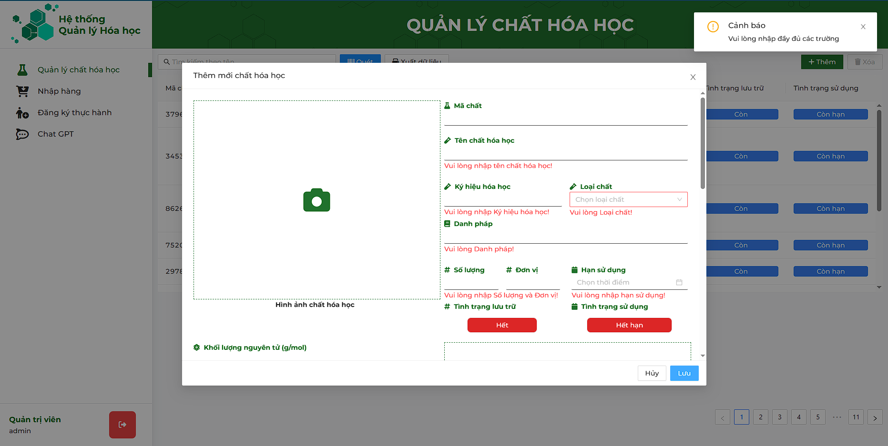
Tại màn hình danh sách chất hóa học, di chuột tới một bản ghi bất kì, sau đó nhấn đúp chuột, cửa sổ Xem thông tin và chỉnh sửa thông tin chất hóa học sẽ hiện ra, Quản trị viên có thể xem
và chỉnh sửa thông tin chất hóa học tại đây.
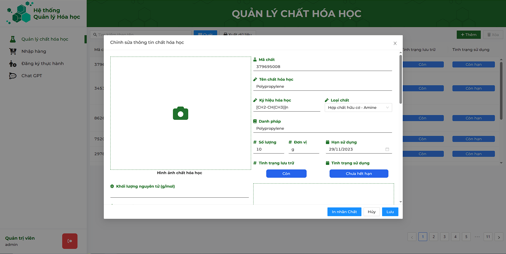
Sau đó ấn nút để lưu thông tin đã nhập
Tại màn hình danh sách chất hóa học, di chuột tới một bản ghi bất kì, sau đó nhấn chuột trái, sau đó ấn vào nút 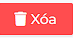 để xóa chất hóa học ra khỏi hệ thống. Nếu
chưa chọn bản ghi nào, nút Xóa sẽ bị ẩn đi

Sau khi ấn nút Xóa, cửa sổ thông báo Xác nhận xóa hay không hiện lên, ấn nút để xác nhận xóa, nút Hủy để hủy thao tác
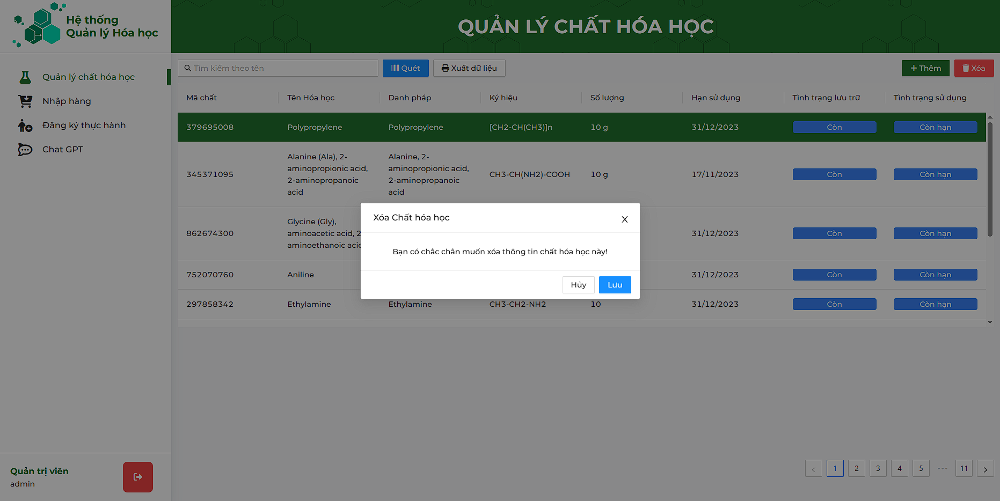
Di chuột vào nút Thêm mới
ở góc phải phía trên màn hình danh sách, sau đó chọn mục
Thêm mới từ file có sẵn, cửa số Thêm mới từ file có sẵn sẽ hiện ra
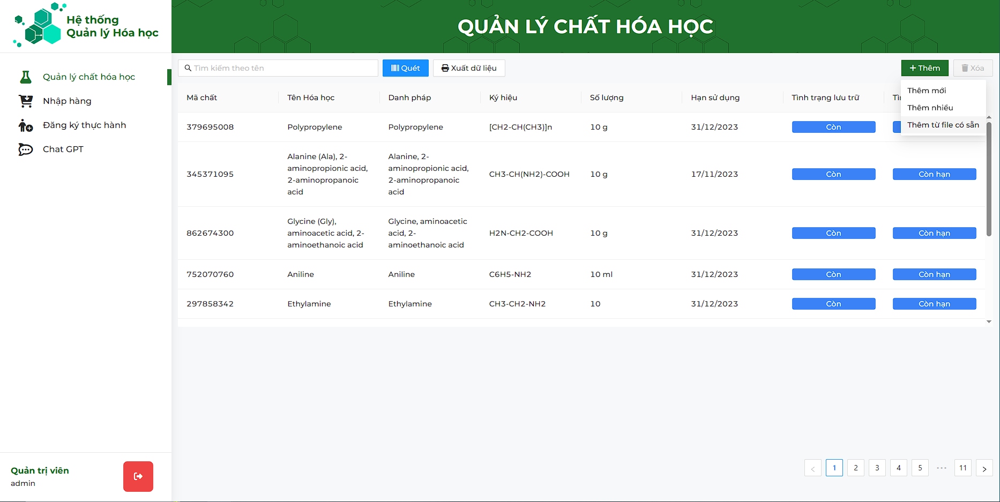
Tại cửa sổ Thêm mới từ file có sẵn, ấn chuột trái vào nút 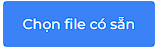. Cửa sổ chọn file hiện lên, tại đây chọn file có định dạng *.xlsx để đưa vào hệ thống. Mẫu file có thể xem Tại đây
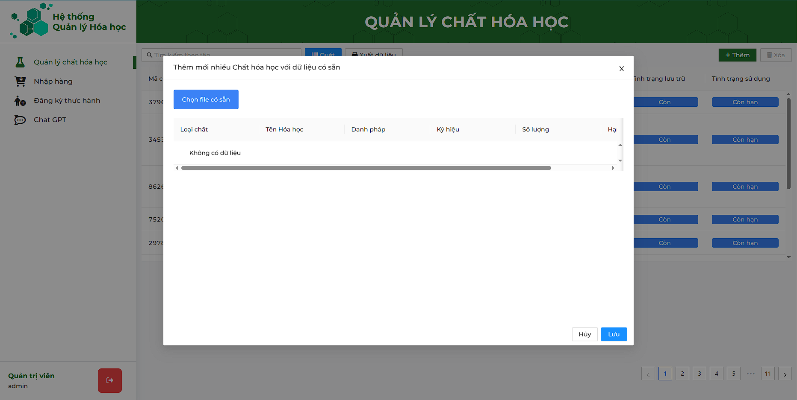
Sau khi chọn file, cửa sổ Thêm mới từ file có sẵn sẽ hiện bảng xem trước những dữ liệu có trong file đó. Sau đó ấn nút để thêm các chất hóa học có trong file vào hệ thống
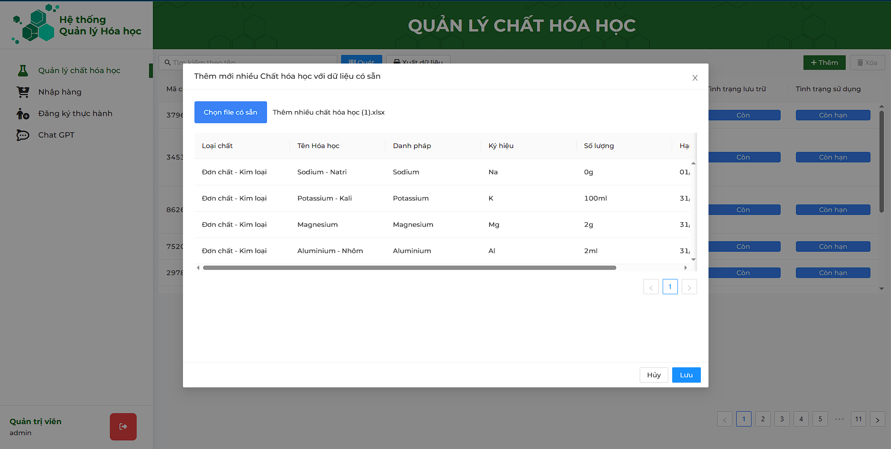